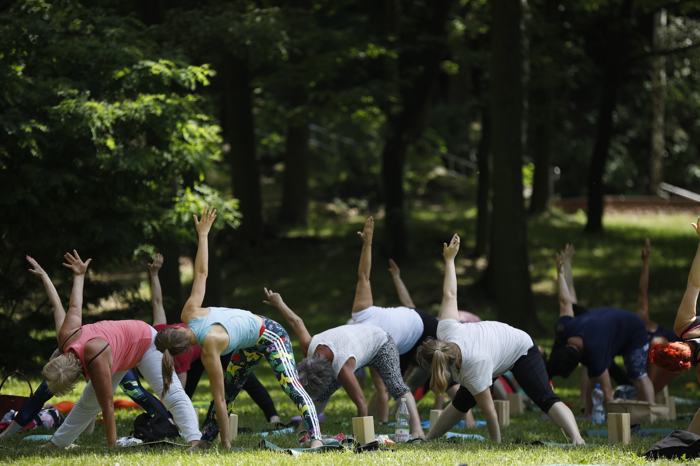
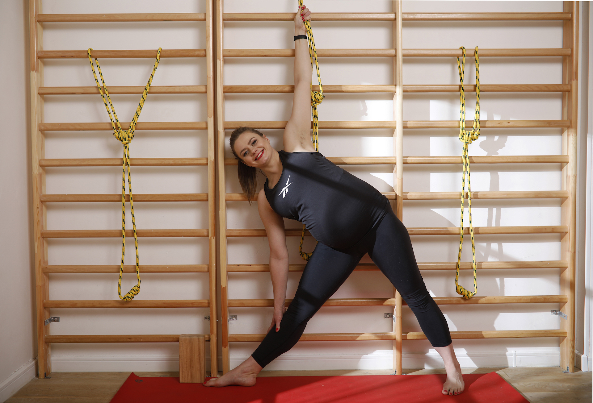
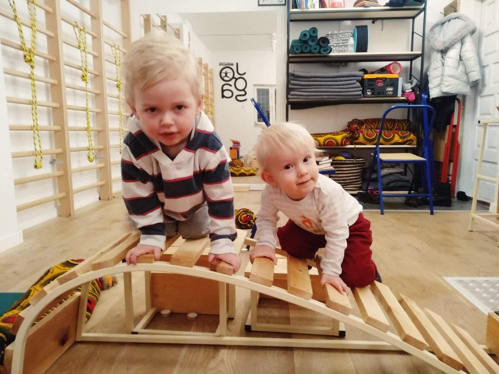
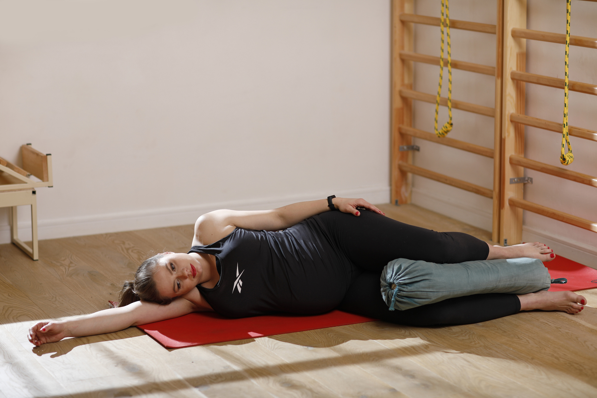
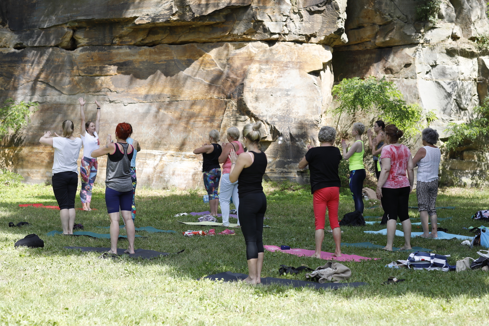

Zajęcia grupowe

W zajęciach można wziąć udział bez wględu na wiek, płeć, stopień elastyczności czy siły. Zajęcia
prowadzone są w niewielkich grupach dzięki czemu można skoncentrować się na specyficznych
potrzebach
każdego uczestnika. Podczas zajęć ważne jest bezpieczeństwo i odpowiedni, celowy dobór pozycji.
Zajęcia grupowe odbywają się wg grafiku zamieszczonego na stronie.
Zajęcia indywidualne

Indywidualne zajęcia to dobry pomysł dla osób, które cenią sobie prywatność i program
dostosowany w
pełni do swoich potrzeb. Osoby początkujące mają okazję nauczyć się wykonywania prawidłowo
pozycji a
osoby już praktykujące skupić się na konkretnych potrzebach, np. zwiększeniu elastyczności,
zakresu
ruchu czy siły.
Zajęcia dla dzieci

Zajęcia dla dzieci to głównie zabawa. Dzieci wykonują pozycje inspirowane światem natury.
Naśladują
zwierzęta, drzewa, ptaki lub przedmioty. Dzieci praktykując asany, doświadczają różnych ruchów
dzięki czemu wzmocniają ciało, uspokajają umysł, rozbudzają kreatywność i wyobraźnię.
W wieku 3-6 lat dzieci są bardzo ruchliwe. Nie są w stanie koncentrować sie dłużej na pozycji.
Męczy
je monotonny i dłużej trwający ruch. Dlatego zajęcia prowadzone są tak, by ćwiczenia były zabawą
a
nie właściwą praktyką.
W wieku 7-12 lat dzieci stają się coraz bardziej systematyczne i samodzielne. Zaczynają dłużej i
efektywniej koncentrować się na danej aktywności.
Zajęcia dla kobiet w ciąży

W czasie ciąży nie ma przeciwskazań do praktyki jogi. W zależności od tego czy pani jest
początkująca w jodze, czy też wcześniej ćwiczyła należy różnie zaczynać i ćwiczyć. Praktyka
zmienia
się także w czasie kolejnych trymestrów ciąży.
Należy pamiętać by przed podjęciem praktyki upewnić się, że nie występują przeciwskazania
zdrowotne
do ćwiczeń. Bezwzględnie też należy trzymać się zaleceń lekarza.
W I trymestrze praktykować mogą panie, które miały wcześniej kontakt z jogą lub są po prostu
aktywne
fizycznie. Podczs ćwiczeń konieczna jest delikatna modyfikacja sekwencji.
W II trymestrze mogą zacząć ćwiczyć panie, które wcześniej z jogą nie miały kontaktu. Większość
nieprzyjemnych dolegliwości ustępuje a kręgosłup i nogi nie są jeszcze mocno obciążone. Należy
jednak nie przesadzać, gdyż za sprawą hormonu – elastyny, zwiększa się zakres ruchomość w
stawach.
W III trymestrze zmienia się środek ciężkości. Kręgosłup staje się mocno obciążony. Pogłębia się
również nacisk macicy na przeponę i organy wewnętrzne, który może powodować problemy z
oddychaniem.
Podczas praktyki należy zachować czujność. W asany należy wchodzić ostrożniej i pozostawać w
nich
krócej. Przy problemach z zachowaniem równowagi należy wspomóc się krzesłem lub ścianą.
Zajęcia różne

Chętnie włączam się w różne incjatywny promujące aktywność fizyczną.
20.05.2017 prowadziłam zajęcia jogi dla dzieci podczas Gry o zdrowie – Ogólnopolski Dzień Marzeń
w
Warszawie organizowany przez Plac Zabaw i Fundacja Mam Marzenie.
09.03.2019 prowadziłam zajęcia z jogi podczas Maratonu Fitness z okazji Dnia Kobiet organizowany
przez MGOiK w Wąchocku.
16.06.2019 organizowałam spotkanie z jogą na świeżym powietrzu w Starachowicach w ramach
obchodów
Międzynarodowego Dnia Jogi.
{kind=link}
{kind=link}
{kind=link}
{kind=link}
{kind=link}
{kind=link}
{kind=link}
{kind=link}
{kind=link}
{kind=link}
{kind=link}